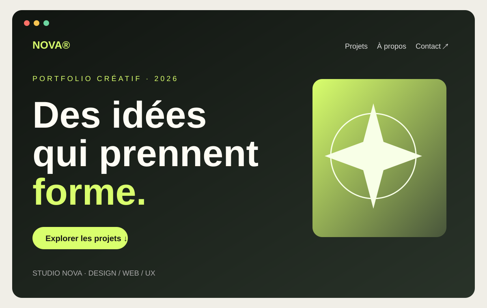
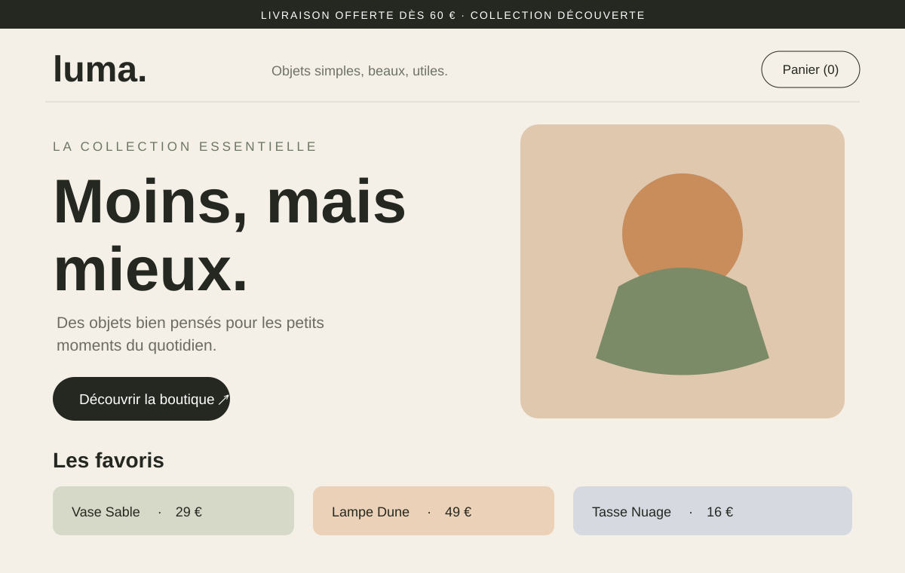
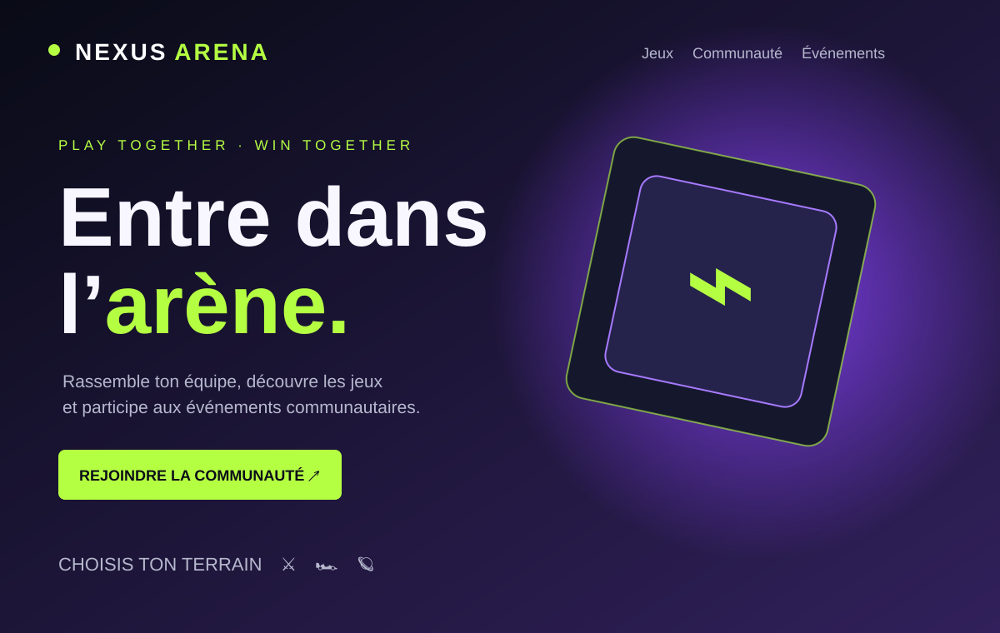
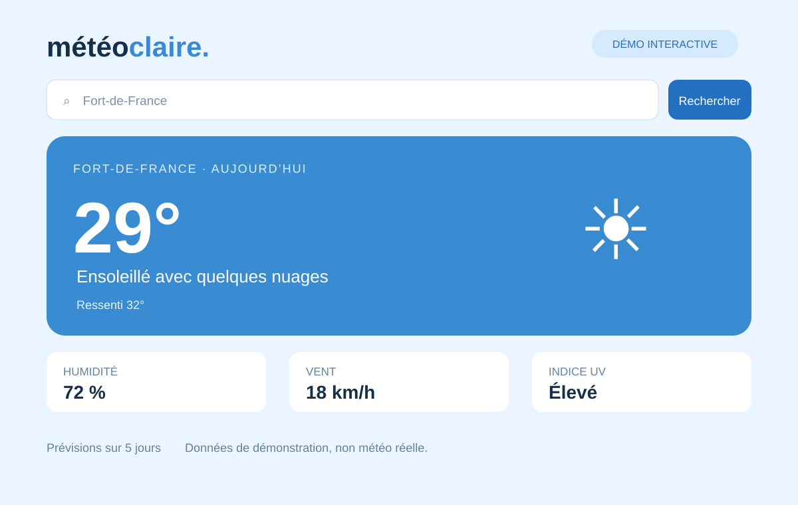
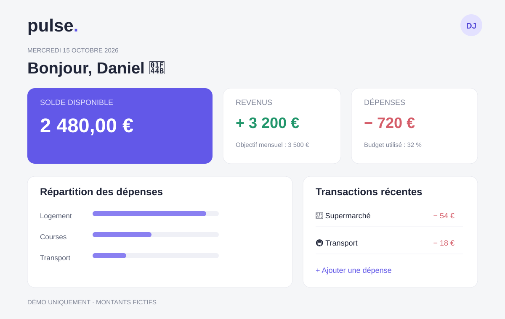

01 / PORTFOLIO
Studio
Nova.
Nova.
Bonjour, je suis Daniel Joseph, développeur web junior et designer UX/UI en début de parcours. J’apprends à créer des expériences numériques modernes, accessibles et simples à utiliser.
Curieux du code. Sensible au design. En constante progression.
Des projets de démonstration codés en HTML, CSS et JavaScript. Les données, marques et produits des exemples sont fictifs; les interactions fonctionnent directement dans le navigateur.





Des bases en développement web et en design d’interface, que je continue de renforcer par la pratique.
HTML · CSS · bases de JavaScript
Structurer des pages web, travailler leur présentation et apprendre à rendre les interfaces adaptables aux différents écrans.
Figma · conception d’interfaces
Explorer la hiérarchie visuelle, la lisibilité, la cohérence des composants et la facilité d’utilisation.
Git · GitHub
Découvrir la gestion de versions et utiliser GitHub pour héberger et présenter mes projets personnels.
Je suis Daniel Joseph, développeur web junior et designer UX/UI junior. Je m’intéresse à la programmation, aux ordinateurs et à la conception d’interfaces claires et agréables à utiliser.
Je développe mes compétences à travers des projets personnels et l’apprentissage continu. Je souhaite rejoindre une équipe où je pourrai progresser, recevoir des retours constructifs et contribuer à des projets numériques concrets.
Réfléchir à l’objectif et aux personnes qui utiliseront le produit.
Créer des interfaces lisibles et cohérentes.
Pratiquer, tester et améliorer progressivement.
Découvrir de nouveaux outils et apprendre des retours.
Je recherche une première opportunité en développement web junior ou en UX/UI design. Je suis basé en Martinique et mobile vers Lyon et sa région.